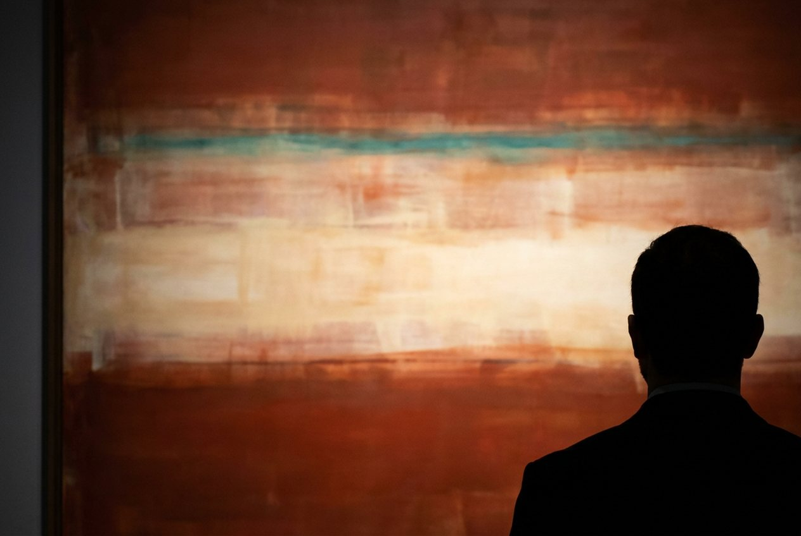

Если мне тревожно
Практика сокращения дистанции. Ротко просил кураторов вешать его картины низко, давать приглушённый свет, пускать в зал не больше одного-двух человек — и советовал зрителю встать в сорока пяти сантиметрах от холста. Не чтобы разглядеть детали: деталей там нет. А чтобы потерять дистанцию. Эта практика делает то же самое руками и ногами — и обнаруживает неприятную вещь: расстояние, на котором вы держите картину, обычно совпадает с расстоянием, на котором вы держите себя.
Зачем это вам
Дистанция — это контроль. С расстояния вы остаётесь тем, кто смотрит: можно оценить, сравнить, решить, нравится или нет. Вблизи роль наблюдателя исчезает — вы становитесь тем, с кем это происходит.
И это переносится за пределы музея. Мы держим на расстоянии не только картины, но и то, что чувствуем. «Я понимаю, что устала», «я знаю, что мне тревожно» — это взгляд издалека, вежливые полтора метра до собственного состояния. Формулировка есть, а состояния в ней нет.
Подойти ближе — отдельное действие, и оно требует решения. Зато только оттуда становится видно, что там на самом деле.
- Одна большая работа: в музее или крупная репродукция от А2.
- Пять минут.
- Всё. Ни материалов, ни подготовки, ни умения рисовать.
- Сначала — как обычно. Встаньте в полутора-двух метрах. Отметьте, что видите: цвета, композицию, нравится или нет.
- Потом подойдите вплотную. Настолько близко, насколько возможно. В идеале — чтобы работа заполнила всё поле зрения и по краям не осталось стены.
- Останьтесь на две-три минуты. Не разглядывайте детали. Просто будьте там.
Возле главных работ обычно есть ограждение — встать в сорока пяти сантиметрах не дадут. Подойдите настолько, насколько разрешат: даже метр вместо трёх меняет опыт заметно.
- Что произошло с дыханием.
- На какой секунде захотелось отойти.
- И главное: на каком расстоянии вы оценивали, а на каком начали чувствовать.
Москва. Кандинский, «Композиция VII», или Филонов — Новая Третьяковка на Крымском Валу. Врубель, «Демон поверженный» и панно «Принцесса Грёза», — Третьяковка на Лаврушинском.
Петербург. Матисс, «Танец» и «Музыка», и «Красная комната» — Эрмитаж, Главный штаб. Куинджи, «Лунная ночь на Днепре», — Русский музей.
Перед походом сверьтесь с сайтом музея: работы перевешивают и увозят на выставки. А если музей недоступен — распечатайте репродукцию от А2 и встаньте вплотную. Свечение потеряется, но главное условие выполнится.
Как это развивает
- Контакт вместо оценки — умение перестать судить и начать присутствовать.
- Телесную честность — отклик тела заметен раньше, чем формулировка в голове.
- Переносимость сильного — способность остаться рядом с тем, от чего хочется отойти.
- Чувствительность к цвету — вблизи цвет перестаёт быть изображением и становится средой.
Что будет, если делать неделю
Одна практика — это пять минут и одно наблюдение. Неделя — это уже привычка замечать, где именно вы стоите.
К третьему-четвёртому разу становится видно, что дистанция включается автоматически: не только перед картиной, но и перед разговором, письмом, решением. Вы ловите себя на «полутора метрах» и понимаете, что можете шагнуть.
К концу недели меняется не восприятие искусства. Меняется скорость, с которой вы обнаруживаете, что смотрите на своё состояние со стороны, — и то, насколько легко подойти.
Почему это работает
На сорока пяти сантиметрах картина заполняет всё поле зрения. Вы больше не смотрите на объект — вокруг вас нет ничего, кроме цвета. Ротко объяснял это через масштаб: маленькая работа ставит вас вне вашего опыта, большая помещает внутрь. Его формулировка — картина не изображение опыта, картина и есть опыт.
Он не изображал переживание, он его конструировал: рассчитывал размер, свет, высоту развески, количество людей в зале. Проектировал условия, при которых с вами что-то произойдёт. Эта практика просто возвращает одно из условий, которое в современных музеях обычно снято.
Как он это придумал и куда пойти в России — в статье «Как смотреть картины Ротко»Сделать это вместе с нами
На арт-коучинге мы занимаемся ровно тем же, только материал другой: краска, бумага, полтора часа и несколько точных вопросов — и человек оказывается не рядом со своим состоянием, а внутри него. Начать можно с бесплатной химической сессии.
Записаться →#практика #Ротко #каксмотретькартины #дистанция #проектированиесостояний #арткоучинг #МыДолжныБытьВоображаемы
![[Vi]](assets/img/journal/emoji/znak_vi.png)